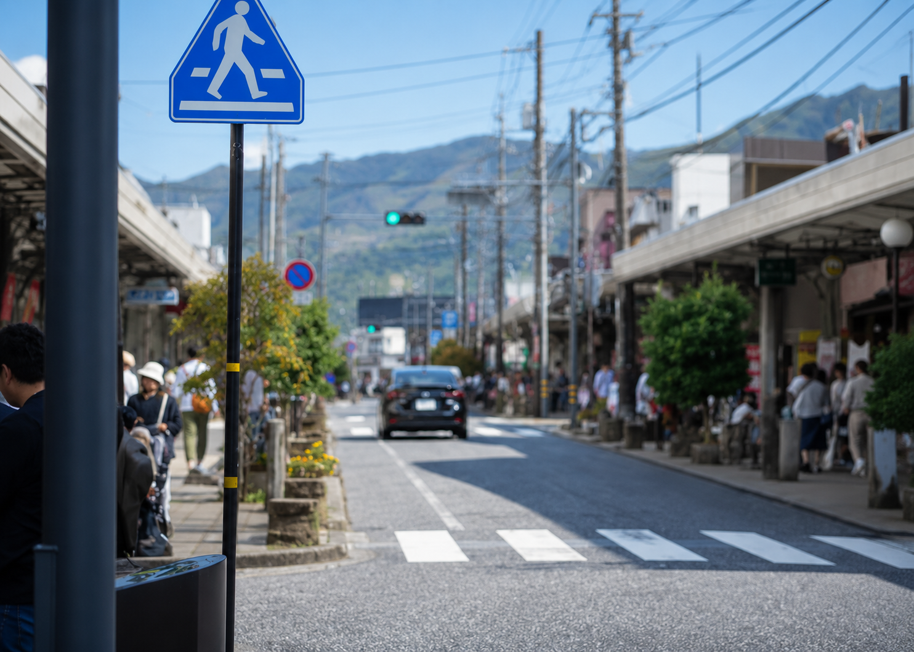

大山ワンダー デザインシステム
トップページ（v20）で決めた色・文字・余白と部品に、下層WFの18テンプレートで必要になる部品を加えた一覧です。見本はすべて本番と同じCSS（tokens.css base.css components.css）で表示しています。下層ページはこの部品を組み合わせて作り、新しい部品が必要になったらここに追加してから使います。
考え方PRINCIPLES
| 原則 | 具体的には |
|---|---|
| 1. 写真が主役、文字は静かに | 色はティール1色とニュートラルだけ。飾りの線や影は最小限にし、写真と余白で見せる。強調は太字より「明朝の大きさ」で。 |
| 2. 60代でも読める | 本文16〜17px、補足14px、タグ13pxが下限。英字ラベル（11〜12px）は飾りなので、意味は必ず和文でも書く。文字と背景のコントラストは4.5:1以上。 |
| 3. めぐる（つながりで回遊） | どのページも「次に行ける場所」で終える。プラン → 物語 → エリア → 人 を、つながりの軸（水・森・神話・刀・発酵・海）で横につなぐ。 |
| 4. 迷わせない | 主要な操作は1画面に1つ（塗りのボタン）。リンクは行き先の名前で書く（「こちら」は使わない）。カードは全体を1つのリンクにする。 |
| 5. 部品は使い回す | ページ固有の見た目（p-）を増やさず、まず c- 部品で組む。値はトークン（CSS変数）だけを使い、色コードを直接書かない。 |
色COLOR
ブランドの色は「大山の森と日野川の水」をあらわすティール #386A76 の1色です。面の色はセージ系の淡い緑で、純白は入力欄とカードの面だけに使います。
ブランド・文字
--color-primary #386A76リンク・ボタン・ラベル
紙色の上の文字 5.6:1
--color-primary-dk #244A52ホバー・押下
紙色の上の文字 9.0:1
--color-ink #0F1525見出し・本文
紙色の上の文字 17.0:1
--color-ink-sub #244A52説明文・ナビ
紙色の上の文字 9.0:1
--color-gray #5A6A72注釈・補足（文字の最も薄い色）
紙色の上の文字 5.2:1
面（背景）
--color-paper #F7F7F7基本の背景・暗い面の上の文字
--color-white #FFFFFFカード・入力欄の面
--color-sage #EFF2EC色付きセクション・目次・囲み
--color-sage-dk #E4EBE2色付き面のホバー
--color-mist #F1F4F2白い面の上のホバー
--color-ph #E0E5F5画像が出るまでの下地
--color-cream #F6F3EA写真帯のコピー
状態（下層：注意書き・フォーム）
--color-error #A8322B入力エラー・「必須」・運休
紙色の上の文字 6.2:1
--color-error-bg #FBEFEE誤りのある入力欄
--color-caution-bg #FFF9EAご予約の前に・特典
--color-caution-line #E3CF94注意の囲みの枠
写真の上の文字
写真の上に文字を置くときは、文字の背後に紺の幕（rgba(var(--scrim-navy), .6) 前後）を敷いてコントラストを確保します。写真を差し替えても読めるように、幕は写真に頼らず必ず入れます。

山の記憶を、旅する。
文字TYPOGRAPHY
見出しは明朝（Shippori Mincho）、本文と操作はゴシック（Zen Kaku Gothic New）。見出しの階層は h1 → h2 → h3 の順に飛ばさず使い、大きさは下の段階からだけ選びます。
--fs-display38〜64px／明朝 | 山から海へ。 h1：トップの大キャッチだけ |
|---|---|
--fs-page30〜44px／明朝 | 刀をめぐる旅 h1：下層ページのタイトル |
--fs-h234px（SP 25px）／明朝 | すべての旅へ h2：セクション見出し |
--fs-h3-lg28px／明朝 | 水をめぐる旅 h3（例外）：テーマの行・本文の章見出し |
--fs-h322px／明朝 | 鉄の物語 h3：カード名 |
--fs-h3-sm20px／明朝 | なぜ大山の水はおいしいのか h3：記事タイトル・SPのカード名 |
--fs-h418px／ゴシック太字 | たたら製鉄の工程 h4：本文中の小見出し |
--fs-lead 18px--fs-body 17px | 1300年前から、大山の雪は森にしみこみ、日野川となって海へ注いできました。 リード文・読み物の本文（行間 1.9〜2） |
--fs-base 16px--fs-small 15px | カードの説明、操作のラベル、表の中身。 標準の文字（SPの本文もこの大きさ） |
--fs-note 14px--fs-tag 13px | ※ 価格に入場料・飲食代は含みません。 注釈・タグの下限（これより小さい日本語は使わない） |
--fs-kicker 12px--fs-micro 11px | DISCOVER 英字ラベル（飾り）専用。日本語には使わない |
改行のルール
- 見出し・キャッチ・カード名は、文節の区切りにゼロ幅スペース（
​）を入れ、変な位置で改行しないようにする（word-break: keep-all）。WPでは見出し用のフィールドに自動で入れる処理を用意する。 - 管理画面から入力される長い文章（本文・説明・注意書き・表）は通常の改行にする（部品側で設定済み）。
- 字間：見出し
.05em、本文.04em、英字ラベル.4em。
余白・幅・角丸・影SPACE & SHAPE
幅と余白
本文の幅は .l-container（左右 --gutter、最大1600px）。読み物の本文だけは --measure で1行35〜40字に抑えます。部品の中の余白は 4・6・8・10・12・14・16・18・20・22・24・28・32・40・48・56px から選びます。
角丸と影
--radius-xs 5px小さな写真
--radius-sm 6px写真・入力欄
--radius-md 10pxカード・囲み
--radius-lg 14px帯・パネル
--radius-pillボタン・チップ
--shadow-lift写真のホバー
--shadow-panelメニュー・予約ボックス
画面幅BREAKPOINTS
| 幅 | 主な変化 |
|---|---|
| 〜360px | 小さいスマホ。ヘッダーのボタンのアイコンを省略、操作部を詰める |
| 〜768px | スマホ。左右の余白20px、見出し25px、カードは1列（スポットは2列）か横スクロール。表は縦積み、予約は画面下の固定バー、絞り込みは下からのシート |
| 〜1024px | タブレット。横に置く列（予約ボックス・絞り込み）を本文の下に回す。検索バーを2列に |
| 〜1180px | ヘッダーをハンバーガーメニューに切り替え |
| 1680px〜 | ワイド。本文幅は1600pxで止め、ヘッダーも本文の左端にそろえる |
アイコンICONS
アイコンは assets/images/icons.svg に集めています。使うときは <svg aria-hidden="true"><use href="#i-car"/></svg>。色は文字の色（currentColor）に従います。線は1.8px・角は丸で統一。アイコンだけのボタンには必ず aria-label を付けます。
矢印
「→」は文字（明朝）で書き、.c-arrow で包みます。ホバーで右へ6px動きます。読み上げないよう aria-hidden="true"。
ボタン・リンクBUTTONS
テキストリンク .c-link-more／本文中のリンク
一覧への「すべての〜」「続きを読む」は .c-link-more。本文中のリンクは下線付きのティール（.c-prose a）。
ラベル・タグLABELS
| 部品 | 見本 | 使いどころ |
|---|---|---|
.c-kicker | STORIES | セクションの英字ラベル。必ず和文の見出しと組にする |
.c-axis | 水 森 神話 刀 発酵 海 刀 | つながりの軸（共通の分類）。リンクにすると軸で絞り込んだ一覧へ |
.c-tag | 半日 5スポット | 所要時間・件数などの属性（押せない） |
.c-badge | A-2 NEW 特典付き 冬季運休 5時間 | プランのコード・新着・特典・運休。写真の左上かタイトルの上 |
.c-plan-count | タクシープラン 5件 | そのテーマ・季節で使えるプランの数 |
.c-plan-pill | タクシープラン 10件 | 写真の上に置くときの件数 |
見出しの型HEADINGS
セクション見出し .c-sec-head（A案）
英字ラベル＋和文見出し（h2）＋説明＋右に「すべての〜」。左寄せが基本で、中央寄せはコピーを見せる場面だけ。
STORIES
つながりの物語
山から海へ、5つの物語でこの土地を知る。
パンくず .c-breadcrumb＋ページ見出し（写真なし） .c-page-head
一覧・フォーム・固定ページで使う。パンくずは nav aria-label="パンくずリスト"、いまのページに aria-current="page"。SPは1行で横にスクロール。タイトルは本番では h1（この見本では見出しの順序を崩さないため p）。
PLAN
観光タクシー旅プラン
大山山麓ぐる〜んと観光タクシー旅。通常料金の約4割引き、乗車特典付きで、3・4・5時間の23コースからえらべます。
ページ見出し（写真あり） .c-page-hero
物語・地域の人・エリアの詳細と、ジャーナルの特集記事で使う（気分・季節・テーマは専用ページを作らずプランの検索結果にするので、そこでは使わない）。写真の下側に紺の幕を敷き、文字は左下。写真のクレジットは右下（.c-credit）。
カード（トップ）CARDS
トップで使っているカードは下層の一覧でもそのまま使います。カードは全体が1つのリンク（<a>）で、中に別のリンクを入れません。写真は alt=""（名前が文字で書いてあるため）。
気分カード .c-mood-card／季節カード .c-season-card


物語カード .c-story-card／テーマの行 .c-theme-row

市町村 .c-area-chip／記事の行 .c-article-row／イベントの行 .c-event-row

カード（下層）CARDS
プランカード .c-plan-card＋並べ方 .c-grid
プラン一覧（検索結果）・関連プラン・特集記事で共通。箱に入れず写真＋文字で見せる（トップの季節・テーマと同じ組み方）。写真（NEWだけ左上に帯）→コードとつながりの軸→タイトル→発着と時間→特典・運休（色の点＋文字）→特別料金と通常料金。運休中もカードは押せるまま（詳細で理由を読めるように）。列数は .c-grid（3列）／--2／--4。
スポットカード .c-spot-card
スポットDBから出す。エリア詳細・特集記事・物語で4列（SPは2列、説明は省略）。カード全体が公式サイトへの外部リンク（新しいタブ）。スポット単体のページは作らない。公式サイトがないスポットはリンクにしない（<div class="c-spot-card">）。


読み物の本文PROSE
物語詳細・人・ジャーナル・固定ページの本文は .c-prose の中に、WPのブロックエディタが出すHTML（h2〜h4・p・ul/ol・blockquote・figure・table）をそのまま入れます。本文幅は680px。写真は .c-prose__wide で本文より広く出せます。
中国山地の砂鉄と、大山の森の炭。その二つが出会った場所で、日本刀の歴史が動きはじめました。
奥日野のたたら製鉄
日野川の上流、奥日野では古くから「たたら製鉄」が営まれてきました。山を崩して砂鉄を集め、三日三晩炭を燃やし続けて鉄の塊をつくります。一度の操業で使う炭は約10トンともいわれます。
日本刀ができるまで
- 玉鋼を選び、熱して打ちのばす
- 折り返し鍛錬で不純物を除く
- 焼き入れで刃文をつける

玉鋼とは
たたら製鉄でできる鉄のうち、炭素量がほどよく、刀に向く部分のこと。
火の色を見て、鉄の声を聴く。それがすべてです。
— 刀匠（取材より）
- 見学できる場所：日南町 たたら資料館
- 関連するテーマ：刀をめぐる旅
※ 参考文献：〇〇〇〇（〇〇出版、2020年）
.c-video（16:9）
.c-prevnext（物語は水の流れの順：森→信仰→鉄→水→海）
表・項目TABLE
表 .c-table（SPで縦積みにするなら --stack）
表は .c-table-wrap で包み、はみ出したら横にスクロール。列が多くSPで読みにくい表は .c-table--stack にし、各セルに data-label を付けると見出しを横に出して縦に積みます。金額は .is-num で右寄せ。
| 所要時間 | 特別料金 | 通常料金 | 出発時刻 |
|---|---|---|---|
| 3時間 | 12,000円 | 19,800円 | 14時まで |
| 4時間 | 15,000円 | 26,400円 | 13時まで |
| 5時間 | 18,000円 | 33,000円 | 12時まで |
項目と内容 .c-dl／詰めた形 --compact
スポット情報・お問い合わせ先・イベント概要など。SPでは項目名を上に載せます（--compact は横並びのまま）。
- 所在地
- 鳥取県西伯郡大山町大山
- 営業時間
- 9:00〜17:00（12〜3月は閉館）
- お問い合わせ
- 大山町観光案内所 0859-52-2502
- 発着
- 米子駅 → 米子駅／皆生温泉
- 出発
- 12時まで
- 人数
- 1台4名まで
囲み・開閉・タブBOXES
注意書き .c-notice（--caution／--info／--error）
予約の注意・運休・お知らせ。要点だけを短く箇条書きにし、詳しい説明はアコーディオンに回します。
アコーディオン .c-accordion（Q&Aは --qa）
HTMLの <details> で作るのでJS不要。ご利用前の注意事項・よくある質問・人物ページのQ&Aで使います。
雨の日でも運行しますか？
雨天でも運行します。天候により立ち寄り先を変更する場合は、ドライバーからご案内します。
料金はいつ支払いますか？
ご利用時にドライバーへお支払いください。現金・クレジットカードが使えます。
タブ .c-tabs（.js-tabs）
アクセスの「飛行機／JR／高速バス／車」など、同じ種類の情報を切り替える。矢印キーで移動、Home／Endで端へ（ui.js）。SPは横にスクロール。
羽田空港 → 米子鬼太郎空港（約1時間20分）。空港から米子駅まではバスで約30分。
岡山駅 → 米子駅（特急やくも 約2時間15分）。
大阪・神戸・東京から米子駅行きの高速バスがあります。
米子自動車道 溝口IC・米子ICから大山方面へ約20分。
絞り込み・ページ送りFILTER
検索バー .c-search
プラン一覧の上。出発地・到着地・日付・人数。日付を入れると冬季運休のコースを自動で外す。SPは2列×2段。
検索結果の特集の導入 .c-feature
気分・季節・テーマの絞り込みが1つだけのとき、プランの検索結果の一覧とページ送りの下に、その条件の特集記事（ジャーナル）を1本だけ出す。アイキャッチ・抜粋（3行まで）・「特集を読む」・動画（任意）。条件が2つ以上、または特集がないときは出さない。カード全体ではなく「特集を読む」だけをリンクにする（動画を別に再生できるように）。

FEATURE特集
刀をめぐる旅 ― 鉄が生んだ、暮らしと文化。
天下五剣のひとつ「童子切安綱」は、なぜこの土地で生まれたのか。中国山地の砂鉄、大山の森の炭、日野川の水をたどり、たたら製鉄の跡と刀工・安綱の足跡をめぐります。
絞り込み .c-filter＋チップ .c-chip／件数バー .c-result-bar／ページ送り .c-pagination
チップは <button aria-pressed>（押すと選択／解除）。いまのページを示すチップ（気分の切り替えなど）はリンクにして aria-current="page"。適用中の条件は .c-chip--applied で一覧の上に並べ、✕で外せる。URLパラメータ（?mood=zekkei ?season=autumn ?axis=katana）で選択済みの状態を開く。テーマの条件名は WordPress の予約語 theme を避けて axis。ページ送りは /plan/page/2/。気分・季節・テーマのカードやメニューはすべてここ（検索結果）へ飛ぶ。
（ここにプランカードが並ぶ）
下から出るシート .c-sheet（SPの絞り込み）
SPでは絞り込み欄を本文の上に出さず、「絞り込み」ボタンで下からシートを開く。HTMLの <dialog> を使うので、背景の操作止め・Escで閉じる・フォーカスの戻りはブラウザが行う。
プラン詳細の部品PLAN
予約ボックス .c-reserve-box／料金 .c-price／SPの固定バー .c-fixed-bar
PCは右の列で追従（position: sticky）。SPは本文の中に置いたうえで、画面下に「予約する」の固定バーを出す（固定バーがある画面は、本文の最後に同じ高さの余白を足す）。
PRICE
18,000円通常 33,000円
- 発着
- 米子駅 → 米子駅／皆生温泉
- 出発
- 12時まで
- 人数
- 1台4名まで
メール予約は利用日の30〜5日前まで
めぐるルート .c-route
立ち寄り先はスポットDBを順番に並べるだけで組める。番号は自動。出発・到着は写真なしの --end。
米子駅


大山寺宝物館 霊宝閣
大山寺の寺宝を収める宝物館。冬期閉館
米子駅または皆生温泉
フォームFORM
予約フォーム（3ステップ）とお問い合わせで共通。ラベルは入力欄の上に置き、必須は「必須」と文字で書く（色だけ・「*」だけにしない）。入力例は欄の中ではなく補足文に書く。エラーは欄の下に赤字で、何をどう直せばいいかを書く。予約フォームだけ、外国の方のために項目名の後ろに英語を小さく添える（.c-field__en）。外国語版のフォームは作らない。
- 内容の入力
- 確認
- 送信完了
動きMOTION
| 動き | ルール |
|---|---|
見出しのリビール .js-reveal | 見出しとラベルだけ。1.2秒でふわっと（ぼかし＋上へ22px）。本文やカードには付けない。 |
| ホバー | 矢印が右へ6px、写真が持ち上がる（.c-lift）か1.04倍。0.3〜0.6秒、--ease-out。 |
| 開閉 | メニュー・アコーディオン・シートは0.25〜0.4秒。切り替え中にチラつかせない。 |
| 自動で動くもの | 動画・スライダーは必ず一時停止ボタンを付ける。5秒以上続く動きは止められること。 |
| 「動きを減らす」設定 | prefers-reduced-motion のときは、リビール・パララックス・流れ星・自動再生をすべて止め、最初から表示しておく。 |
アクセシビリティACCESSIBILITY
目標は JIS X 8341-3 の適合レベルAA（WCAG 2.2 AA 相当）。トップは axe-core で違反0件を確認済み。下層も公開前に同じ確認を行います。
| 項目 | ルール |
|---|---|
| コントラスト | 文字は背景に対して4.5:1以上（大きな見出しは3:1以上）。--color-gray が使える最も薄い文字色。写真の上は幕を敷く。 |
| 見出し | 1ページに h1 は1つ。h2 → h3 → h4 を飛ばさない。英字ラベルは見出しにしない（p）。 |
| リンクとボタン | ページを移動するのはリンク（a）、その場で何かするのはボタン（button）。押せる範囲は44×44px以上。カードの中にリンクを入れ子にしない。 |
| キーボード | すべての操作がTabとEnter／Space／矢印で行える。フォーカスの枠は消さない（暗い面では明るい色に）。メニューやシートを開いたらフォーカスを中に移し、閉じたら元に戻す。 |
| 画像 | 意味のある写真・図には内容を表す alt。文字で名前が書いてあるカードの写真は alt=""。アイコンは aria-hidden="true" にし、アイコンだけのボタンには aria-label。 |
| 状態 | 開閉は aria-expanded、選択は aria-pressed／aria-selected、いまの場所は aria-current。色だけで状態を伝えない。 |
| フォーム | すべての欄に label。補足とエラーは aria-describedby で欄に結び付け、誤りのある欄は aria-invalid="true"。送信時は上に誤りの一覧を出して各欄へリンク。autocomplete を付ける。 |
| 言語 | 英字ラベルには lang="en"。 |
文言・表記WRITING
| 項目 | こう書く | こう書かない |
|---|---|---|
| トーン | 静かに語りかける。「〜をめぐる」「〜に出会う」 | 「絶対行くべき！」などのあおり、！の多用 |
| ボタン | 行き先・行動を動詞で。「プランを探す」「このプランで予約する」「すべての物語」 | 「こちら」「詳しくはこちら」「クリック」 |
| 数字・金額 | 半角数字、3桁区切り、「円」。「18,000円」「5時間」「4名まで」 | 「18000円」「¥18,000」「五時間」 |
| 日付・時刻 | 「2026年11月8日（日）」、範囲は「〜」。時刻は「10:00」「12時まで」 | 「11/8」だけ、「10時〜」と「10:00〜」の混在 |
| 固有名詞 | 「大山（だいせん）」は初出でルビか読みを添える。市町村名は正式名称（米子市、日吉津村） | 略称だけ（「米子」で市を指す） |
| 英字ラベル | 大文字の短い英単語（STORIES、PLAN）。必ず和文の見出しと組にする | 英字だけで意味を伝える |
| サイト内の呼び名 | 「観光タクシー旅」「プラン」「つながりの軸」「物語」「地域の人」 | 「ツアー」「コース商品」など別の呼び名を混ぜる |